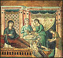
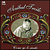
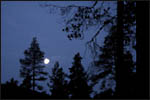
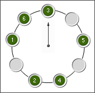

Vísperas de la fiesta del nacimiento de la Virgen María, (8 de septiembre).
Uno de los poquitos cumpleaños que festeja la Iglesia, como decíamos
una vez.
La fecha, convencional pero convenientemente, está nueve meses después de
la fiesta de la Inmaculada Concepción, el 8 de diciembre.
Se me ocurre ahora preguntarme cuál de estas dos fechas es la original...
Busquemos...
En estas
páginas se
lee que ambas fiestas son muy antiguas:
nacieron en la iglesia de oriente, entre siglos IV y VI.
Acá
dice -medio de pasada- que la fecha de la fiesta de la Natividad de María viene, históricamente,
primero... Veré si consigo más información, o si alguien me la hace llegar.
-

En momentos en que María, recién nacida, se hallaba en brazos de santa Ana,
pude verla en el cielo presentada ante la Santísima Trinidad, y saludada
con gozo enorme por todos los ángeles. Supe que todas sus alegrías,
sus dolores, y su destino futuro, le fueron mostrados en forma
sobrenatural.
María recibió el conocimiento de los más profundos misterios sin perder su inocencia de niña.
Nosotros no podemos comprender esta ciencia que le fue dada, porque la nuestra ha tomado su origen en el árbol fatal del Paraíso.
Ella conoció todo como el niño conoce el seno de su madre,
y sabe que es en él donde debe apagar su sed.
Cuando cesó esta visión, escuché a la pequeña María llorar, por primera vez.
(de las Visiones de Ana Catalina Emmerich)
Un poco en la línea de lo que decíamos hace poco, (sobre "enseñar lo que es la santidad" vs "ser santo"), un post (que traduzco):
-
Los intelectuales-académicos tenemos nuestras propias formas de fabricarnos esos
"sustitutos de la santidad personal" que mencionaba antes ...
Tendemos a reemplazar
los actos de amor por el hallazgo de "grandes ideas" ... o
posts en nuestros weblogs.
Nos encerramos en nuestros pequeños proyectos intelectuales y nos comportamos como bestias con nuestro prójimo. Conozco a alguien, por ejemplo, que ha pagado con un divorcio su doctorado en teología...Es un ejemplo claro de prioridades trastocadas.
Y creo que aquellas advertencias contra el orgullo intelectual que traía la "Imitación de Cristo" no están de más. ¿Qué tiene de bueno ser capaz de definir una virtud si uno no está viviendo una vida virtuosa?
Me he olvidado de mencionar HMS: Heart, Mind and Strength (no asustarse por el nombre del dominio); un weblog católico de EEUU grupal. Participan algunos bloggers con blogs propios (Amy Welborn, Mark Shea), Emily Stimpson (la que tenía "Fool's Folly" y que ahora se pasó a éste) y otros. La estética y la navegación no son gran cosa, pero zafan. Hay mucha actividad, y a veces se arman discusiones interesantes. Una de ellas, ahora, es el tema de la guerra con Irak...
Siendo estos yanquis (en este weblog y en la mayoría de los relacionados) mayoritariamentes "right-wing", es de imaginar el tono general del asunto... A mí, frecuentemente llegan a irritarme ... aunque uno no tenga mucho de "left-wing" que digamos.
Pero: por un lado, no son estos los días más adecuados para tocar el tema del papel de EEUU en el mundo... y además, justo hoy, leyendo acá, encuentro que al menos varios de ellos hacen algún que otro esfuerzo por despegarse de ese "patriotismo carnal" (país, religión , ideología) ...
Seguiremos otro día.
Un post en La decadencia del ingenio; entre otros varios, últimamente.
(otro aviso para los que caen acá sin saber mucho español: la frase anterior no es un buen ejemplo del idioma de Cervantes y Santa Teresa, no vayan a creer; y esto tampoco)
De "The great Gatsby":
-
He had one of those rare smiles with a quality of eternal reassurance in it,
that you may come across four or five times in life. It faced, or seemed to face,
the whole external world for an instant and then concentrated on you with
an irresistible prejudice in your favor.
It understood you just as far as you wanted to be understood, believed in you as you would like to believe in yourself.
Ah... bueno.
Un poco por lo del post anterior, otro poco para limpiarme los oídos del "bahiano" de Soledad, y otro poco porque sí:
De tangostore, 45 segundos de Verano porteño, de Piazzola, en versión de Baremboim, Mederos y Console.
Acaso esto no sea más que un deplorable ejercicio de la nostalgia más trivial. Pero el asunto es que, entre mis pocos recuerdos infantiles (tengo mala memoria para mis primeros años) está una canción que aprendí en la escuela, de una hormiguita y un cascarudo. Nunca la volví a escuchar. Anoche se me ocurrió buscarla en Internet ... y para mi sorpresa y escándalo... no hay el menor rastro.
Rescatémosla del olvido, pues; y ahorremos a otros navegantes la terrible desilusión de no poder reencontrarse con:
- La canción de la hormiguita y el cascarudo
Iba una hormiguita - chiquita, chiquita
con su carga a cuesta - molesta, molesta
Pasó un cascarudo - peludo, peludo,
y la hormiguita - chiquita, chiquita
con su equipaje - de viaje, de viaje
sobre el cascarudo se subió apurada.
Y así la hormiguita - chiquita, chiquita
llegó a su hormiguero - ligero, ligero,
gracias a la ayuda - sin duda, sin duda,
del buen cascarudo - peludo, peludo.
Y ya que estaba, me hice un midi con la música (4 kb), según la recuerdo; dudo mucho sobre esa subida de un tono en el tercer verso, pero no se me ocurre otra cosa.
Y recuerdo una malinterpretación de mi parte .... (corregida en mi cabeza vaya a saber cuándo... tal vez ahora mismo), en la trama de la historia: en los últimos versos (tener en cuenta mi extremada juventud y escaso vocabulario) la palabra "gracias" sólo evocaba la clásica manifestación de agradecimiento; y así imaginaba a la hormiguita agradeciendo al cascarudo ( "gracias por la ayuda"); y el cascarudo asintiendo -con algo de inmodestia- : "Sin duda, sin duda".
Y ahora me parece que esa alteración mía introducía un ingrediente dramático -algo de diálogo, al menos- que daban un toque de vivacidad a la historia...
PS: Enviado este post, se me ocurre que hay personas
que entran aquí y casi no saben español...
católicos de EEUU, mayormente ; acaso algunos, al ver esto,
se imaginarán haber encontrado una muestra representativa de lo más alto de nuestra
poesía y nuestra música, y se esforzarán en "apreciar" eso ...
Y bueno...
Entre el 2 y el 15 de septiembre se está realizando (gracias a Ignacio por recordármelo) la XIV Exposición del Libro Católico, en Sarmiento 1272 (Buenos Aires, Argentina... por las dudas); entrada gratis.
Hoy me di una vuelta.
Pasable ... para lo poco que a uno le simpatizan los eventos culturales
católicos con gustillo "oficial" en estos tiempos y lugares, y el nivel
promedio de las editoriales católicas argentinas... Pero, contando
eso, y lo modesto de la exposición, y lo caro de los libros importados,
el asunto está bastante bien. Al menos, hay cosas agradablemente
"duras" (Mons. Aguer, P Sáenz) y hasta
francamente-politicamente-incorrectas
(doble adverbio!) como el Padre Castellani y Hugo Wast, en primera fila...
Y hay material interesante (mucha patrística, sobre todo), aunque nada
barato.
Lástima la música de fondo ... (Soledad, en sus peores momentos).
Yo, como para despuntar el vicio, me compré tres libros:
un epistolario de Edith Stein (para empezar a conocerla),
un librito de Guitton y un opúsculo de Thibon.
Recién arranqué con las cartas de la judía... parece ser
de esas santas "severas", a lo San Juan de la Cruz;
en las antípodas de las mariconadas
mundanas (religiosas o laicas); veremos.
- - ...incluso si Melkor pudiera de alguna forma
ser arrojado o expulsado de Arda, aún su Sombra permanecería,
y el mal que ha traído y cultivado como una semilla crecería y se multiplicaría.
Y si algún remedio a esto ha de ser encontrado antes de que todo termine,
cualquier luz nueva que se oponga a la sombra, o una medicina
para las heridas, entonces, creo yo, debe venir de fuera.
- Entonces, señor, -dijo Andreth, y alzó la mirada con asombro- ¿crees en esta Esperanza?
-No me preguntes todavía -respondió Finrod. -Porque todavía no es para mí sino extrañas
nuevas que me llegan de lejos. Jamás se habló de una esperanza así a los Quendi.
Sólo a vosotros se envió. Y sin embargo, a través de vosotros
podemos oírla y elevar los corazones....
"El viejo oligarca" (Old Oligarch's Painted Stoa) es el simpático nombre de un simpático weblog de EEUU, de un teólogo; que, si no me engaña una primer lectura a vuelo de pájaro, sabe pensar y escribir.
En un post comenta algo sobre el remanido tema de la Ciencia y la Fe (el tipo parece que antes era un "físico-geek"); más que sus menciones de la encíclica de Leon XIII y del sitio www.godinscience.com (que no me convenció mucho que digamos), me gustó su recomendación de los ensayos de Werner Heisenberg, y en especial su libro "Física y Filosofía".
Heisenberg, uno de los capos
máximos de la física cuántica, es uno de los físicos de esa camada
que más se ocuparon de temas filosóficos; y uno que lo hizo
con una rara amplitud de miras y conocimiento de la filosofía
(antigua y moderna). Tal vez uno de los últimos "científicos
humanistas", en el sentido más alto (renacentista, digamos)
de la palabra; o dicho de otra manera: un intelectual en serio.
Misa al mediodía en la iglesia de San Ignacio, en el centro. La iglesia más antigua de Buenos Aires; y que se está cayendo a pedazos, al parecer. Eramos solo seis los asistentes, al comienzo de la misa; después llegaron más. Melancólica, y en cierta manera reconfortante, "pobreza"...
En la primera lectura, se lee un fragmento de Pablo .. el clásico " Si alguno entre vosotros se cree sabio según este mundo, hágase necio, para llegar a ser sabio; "; pero me llama la atención lo que sigue, que antes me había pasado desapercibido:
-
Así que, no se gloríe nadie en los hombres, pues todo es vuestro:
ya sea Pablo, Apolo, Cefas, el mundo, la vida, la muerte, el presente, el futuro, todo es vuestro...
-
Míos son los cielos y mía es la tierra;
mías son las gentes, los justos son míos y míos los pecadores;
los ángeles son míos, y la Madre de Dios y todas las cosas son mías;
y el mismo Dios es mío y para mí, porque Cristo es mío y todo para mí.
Pues ¿qué pides y buscas, alma mía? Tuyo es todo esto, y todo es para ti
Y después en la lectura del evangelio viene esa frase que Pedro le dirige a Jesús, cuando este le pide que tire la red: "Maestro, hemos estado bregando toda la noche y no hemos pescado nada; pero, en tu palabra, echaré las redes". Frase llena de resonancias, y que ha sido aplicada muchas veces a la situación del alma "sin la gracia"; frase llena de consuelo, por otra parte.
Hoy, 5 de setiembre; hace cinco años moría la Madre Teresa de Calcuta.
-
Es fácil amar a los que viven lejos.
No siempre lo es amar a quienes viven a nuestro lado.
Es más fácil dar un plato de arroz para saciar el hambre de un necesitado que confortar la soledad y la angustia de alguien que no se siente amado dentro del hogar que compartimos.
El primer trabajo que tenemos que hacer con los enfermos graves,
recogidos en las calles muchas veces, es lavarlos. La mayoría
ni siquiera conocen el jabón, y la esponja les da miedo.
Si las Hermanas no vieran en estos desgraciados el rostro
de Cristo, este trabajo sería imposible.
Queremos que se den cuenta de que hay personas que los aman.
Aquí reencuentran su dignidad humana, y mueren en un silencio
impresionante.
Dios ama el silencio.
Leído anoche, en la novela de Le Carré: Smiley, en Zurich, va a visitar a lituano, preso, posible futuro colaborador de los Servicios:
-
Para los suizos, era un indeseable total.
Había estafado a un hotel, lo cual en Suiza es un crimen
tan horrendo que tiene párrafo aparte en el código penal.
"El mundo se estremece". "La gente no puede creer lo que ve". "Es la gloria".
Eso dicen -a los gritos- por la radio.
Y no, no es la parusía.
Es que Argentina le ganó a EEUU al básquet.
Dylan comenta algo sobre el Benedictus, la oración de Zacarías, padre de Juan Bautista:
-
«Bendito el Señor Dios de Israel
porque ha visitado y redimido a su pueblo.
y nos ha suscitado una fuerza salvadora
en la casa de David, su siervo,
como había prometido desde tiempos antiguos,
por boca de sus santos profetas,
que nos salvaría de nuestros enemigos
y de las manos de todos los que nos odiaban
haciendo misericordia a nuestros padres
y recordando su santa alianza
y el juramento que juró a Abraham nuestro padre,
de concedernos que, liberados de manos enemigas,
podamos servirle sin temor
en santidad y justicia
delante de él todos nuestros días.
Y tú, niño, serás llamado profeta del Altísimo,
pues irás delante del Señor para preparar sus caminos
y dar a su pueblo conocimiento de salvación
por el perdón de sus pecados.
Por las entrañas de misericordia de nuestro Dios,
que harán que nos visite una Luz de la altura,
a fin de iluminar a los que habitan en tinieblas y sombras de muerte
y guiar nuestros pasos por el camino de la paz.»
(Lucas 1:68-79)
-
Las palabras que empiezan con "Y tú, niño..." , que Zacarías dirige a su hijo , el Precursor del Verbo,
las tomo como dirigidas a mí, y a todos nosotros, para que proclamemos la buena noticia con
nuestras acciones, nuestras palabras, nuestros silencios y nuestras vidas. Para que seamos
mártires ("testigos") , como San Juan Bautista lo fue.
Y cuánto amor, cuánto consuelo encuentro en ese final del cántico; un amanecer esperanzador, una compasión tierna que nos visita... Esas líneas me vienen a la cabeza, en los últimos tiempos, rezando por los muertos, o en esos momentos difíciles en que las nubes mentales me oscurecen por momentos la misericordia de Dios....
[link vía Denker Uber ]
En tangostore tienen un
catálogo bastante extenso de CDs de tango, con muestras de audio de 45 segundos de duración (en Real Audio).
Por ejemplo:

- Zorro Gris por Juanjo Domínguez (guitarra)
- Ninguna por Angel Vargas, con D'Agostino
- Milonga Sentimental, por Lidia Borda
- Arrabal amargo, por Lidia Borda
- Hotel Victoria por Salgán- De Lío (piano y guitarra, en vivo)
Y ya vendrán más tanguitos.
De la carta 25 del diablo a su sobrino:
-
La utilidad de las modas en el pensamiento es distraer la atención de los hombres de sus auténticos peligros.
Dirigimos la protesta de moda en cada generación contra aquellos vicios de los que está en menos peligro de caer,
y fijamos su aprobación en la virtud más próxima a aquel vicio que estamos tratando de hacer endémico.
El juego consiste en hacerles correr de un lado a otro con extintores de incendios cuando hay una inundación,
y todos amontonándose en el lado del barco que está ya casi con la borda sumergida.
Así, ponemos de moda denunciar los peligros del entusiasmo en el momento preciso en que
todos se están haciendo mundanos e indiferentes; un siglo después, cuando estamos realmente haciendo a
todos byronianos y ebrios de emoción, la protesta en boga está dirigida contra los peligros del mero "entendimiento".
Las épocas crueles son puestas en guardia contra el Sentimentalismo, las casquivanas y ociosas
contra la Respetabilidad, las libertinas contra el Puritanismo; y siempre que todos los
hombres realmente están apresurándose a convertirse en esclavos o tiranos, hacemos del
Liberalismo la máxima pesadilla.
Decía un obispo:
-
Y hay, amados hermanos, otra cosa, en la vida de los pastores, que me aflige sobremanera; pero, a fin
de que lo que voy a decir no parezca injurioso para algunos, empiezo por acusarme yo mismo de que,
aun sin desearlo, he caído en este defecto, arrastrado sin duda por el ambiente de este calamitoso
tiempo en que vivimos.
Me refiero a que nos vemos como arrastrados a vivir de una manera mundana, buscando el honor del ministerio episcopal y abandonando, en cambio, las obligaciones de este ministerio. Descuidamos, en efecto, fácilmente el ministerio de la predicación y, para vergüenza nuestra, nos continuamos llamando obispos; nos place el prestigio que da este nombre, pero, en cambio, no poseemos la virtud que este nombre exige.
...
El pastor debe saber guardar silencio con discreción y hablar cuando es útil, de tal modo que nunca
diga lo que se debe callar ni deje de decir aquello que hay que manifestar.
Porque, así como el hablar indiscreto lleva al error, así el silencio imprudente deja en
su error a quienes pudieran haber sido adoctrinados.
Porque, con frecuencia, acontece que hay algunos prelados poco prudentes,
que no se atreven a hablar con libertad por miedo de perder la estima de sus súbditos;
con ello, como lo dice la Verdad, no cuidan a su grey con el interés de un verdadero pastor,
sino a la manera de un mercenario, pues callar y disimular los defectos es
lo mismo que huir cuando se acerca el lobo.
Por eso, el Señor reprende a estos prelados, llamándoles, por boca del profeta: "Perros mudos, incapaces de ladrar". Y también dice de ellos en otro lugar: "No acudieron a la brecha ni levantaron cerco en torno a la casa de Israel, para que resistiera en la batalla, el día del Señor". Acudir a la brecha significa aquí oponerse a los grandes de este mundo, hablando con entera libertad para defender a la grey; y resistir en la batalla el día del Señor es lo mismo que luchar por amor a la justicia contra los malos que acechan.
O sea: San Gregorio Magno, cuyo santo se celebra hoy.
De sus reformas litúrgicas proviene el llamado "canto gregoriano".
Los textos los saqué de gratisdate; que contiene mucho material valioso, aunque la organización de la cosa no me convence.
existe un hombre más solo
que un aviador en los aires
y que un polista en el polo.
Aglaé, santa Aglaé,
bien andé y mal acabé.
...
Te dije: Gracias, querida;
Gracias, dije, y te miré.
Y me perdiste la fe
tras de salvarme la vida.
Teresa, dura Teresa
la mirada también besa.
Con tal sin embargo que...
(y si el post anterior era una dudosa recomendación de Le Carré, esto es mucho más dudosa recomendación de Castellani; pero, lo mismo: qué me importa)
Información para el improbable pero no imposible interesado. En la librería de usados "El ventanal" (Av. de Mayo 769, subiendo por la escalera) hay bastante material para ver.
El aviso va, sobre todo, por varios libros del Padre Castellani (Dulcinea, Las muertes del padre Metri, Las canciones de Militis, El Evangelio de Jesucristo), no baratos (de $30 para arriba) pero considerando que son -si no me equivoco- primeras ediciones, a los fanáticos/bibliófilos les puede interesar.
También está la "Historia de la filosofía" de la BAC, de Urdanoz yFraile (pero no venden tomos sueltos, maldición).
"Las novelas de espionaje", como género, nunca me atrayeron; soy lector demasiado apresurado (trato de subsanar este defecto con mi gusto por las relecturas) y me son penosas las tramas enredadas, esas que uno no puede distraerse (o saltearse) un párrafo sin perder el hilo.
Le Carré, sin embargo, me ganó. El tipo, tiene algo.
En las primeras páginas de "El peregrino secreto"
que empecé hace poco, el choque -en lo que a mí respecta-
no viene esta vez por el lado de la trama, sino por
la abundancia de "frases ingeniosas", dichos sentenciosos,
con un guiño al lector (cómplice en la inteligencia).
Eso, normalmente, me molesta.
Pero, una vez más, -y por ahora- Carré se sale con la suya.
Por su propio (modesto acaso, pero indudable) oficio;
y probablemente porque me consta, de otros libros, que al
tipo le da el cuero para estas cosas.
Y así...
(pag 3)
(pag 3)
(pag 6)
Los que pueden, hacen; los que no, enseñan.
(pag 7)
(pag 8)
(pag 9)
No sé si con esto estoy recomendando o desrecomendando a Le Carré a
los potenciales lectores; no importa mucho.
Me queda dando vueltas la aplicación religiosa (sí, el tipo
tiene la idea fija...), de eso de que
"los que pueden, hacen; los que no, enseñan".
Cuántos hay (a mí no me miren) que pretenden consolarse de
no ser buenos cristianos con el argumento (no formulado... o sí)
de que : "Yo al menos sé lo que significa ser cristiano...
y lo enseño "...
El que no puede ser santo, enseña. O eso cree; porque, en verdad,
sólo enseña el santo. O como el mismo Carre dice después:
Los que tienen miedo nunca aprenden; y en ese caso, no tienen
derecho a enseñar.
El post anterior tiene tres adverbios de modo (literalmente, aparentemente , precisamente) en veinte líneas. Por esto, y por todo el resto del weblog, no tenemos la más mínima posibilidad de aspirar a la distinción de la "cinta azul" de "Maldita Sea". Lamentablemente.
Un día laborable -en mucho tiempo- no la pasé laburando; no viene mal, tal vez, para mirar algo más de cerca algunas cosas.
Salgo de paseo a la tarde; el tren, saliendo de Chacarita, se rompe; tras una eternidad, a paso de hombre (literalmente) y con el consabido malhumor, nos bajamos en Paternal. Abandono y vuevo a casa.
Al atardecer, tremendo dolor de cabeza; largo la computadora, salgo a caminar y termino rezando un rosario en la iglesita de Caacupé.
Al volver, siento que la cabeza se me parte. Paso frente a un cibercafé, a metros de casa, y veo cierta agitación; aparentemente, un intento de robo. La cosa es contra un pibe de remera, robusto, rubión y de cabeza rapada; alguien ha conseguido un palo y le da en la cabeza; sangre. La gente afuera mira, alguien sale a buscar un policía; el ciber sigue lleno, y han cerrado la persiana metálica.
- PS: Veo ahora que La Nación
informa:
"experto en artes marciales, se defendió a golpes de un asalto "... noticia
auspiciada por una academia de artes marciales, pareciera...
Y sigue doliéndome la cabeza, así que me voy a dormir temprano.
Simone Weil, que pasó su vida con estos dolores -migrañas-
contaba del deseo instintivo que sentía, en sus crisis,
de golpear al prójimo, en la cabeza, precisamente donde a ella le dolía.
Una especie de imagen de la condición humana, en lo que tiene de "carnal",
supongo...
Los blogs del norte en estos días están dándole vueltas al tema de la nueva Catedral de Nuestra Señora de Los Angeles. La verdad es que, con toda la buena voluntad y "apertura" que uno la mire ... sigue pareciendo una cosa más egipcia que cristiana. El exterior, sobre todo, -y esa imagen de la Virgen!- es bien feo... Pero bueno... hay cosas peores.
El sitio web oficial tiene unas cuantas presentaciones, con flash.
Algunos sugerían que la intención tal vez fuera la de atraer incautos hostiles... En un día de lluvia, por ejemplo, el paseante casual tal vez se metería a buscar un ratito de refugio... pensando que se trata del edificio de una empresa telefónica, o algo así...
| SOLSTICIO | |
|  |
Fue la noche primera del solsticio. Ibamos cada cual distintamente puestos en orden decididamente desordenado, de camino al juicio.
Todos fuera de fila pero en quicio.
Llegamos. Coronamos a los robles |
|
Bebimos. La enramada sobre el lago se encendió y relumbraron los tapices que hicimos la brigada de aprendices para sorpresa del ilustre Mago.
Bebimos otra vez. Bebió a la par
Eduardo B. M. Allegri |
-
He visto en sueños una multitud de personas, llegadas de lejos
con el solo propósito de socorrernos, que llenaban nuestra casa.
Eran muertos.
-
Un día terrible. La carencia de vino y de comida nutritiva,
la amenaza de quedarnos sin carbón, la certeza
humana de no poder alimentar mañana
a nuestras hijas, la imposibilidad de seguir viviendo aquí
y la imposibilidad de irnos, la evidente hostilidad de
tantos... ; y finalmente -y sobre todo- esta
espera infinitamente dolorosa de un libertador que no
llega nunca; todo este conjunto nos pone a dos pasos
de la desesperación.
Mientras se tensan nuestras voluntades, la casa es sacudida por la tempestad y el cielo está triste como la muerte sin Dios.
¿Por quién, entonces, sufrimos así ?
Lo dijo Kurtz (un canonizable de la religión humanista-secular) [ link ]:
-
... quienes creemos en una sociedad laica debemos
oponernos constantemente a la invasión de la religión en todas las áreas de la vida,
y exigir una especie de liberación laica para la ciencia, la moral, la política y la conducta humana
Y nos va bárbaro; todavía no somos totalmente felices, pero estamos a un pasito...
De la carta de San Pablo a los Romanos, cap. 12; se leyó en la segunda lectura de la misa de hoy.
-
Les ruego, pues, hermanos, por la gran ternura de Dios,
que le ofrezcan su propia persona como un sacrificio vivo
y santo capaz de agradarle; este culto conviene a criaturas que
tienen juicio.
No sigan la corriente del mundo en que vivimos, sino más bien transfórmense a partir de una renovación interior. Así sabrán distinguir cuál es la voluntad de Dios, lo que es bueno, lo que le agrada, lo que es perfecto.
Nueva versión del Windows Commander (clon del viejo Norton Commander para Windows). Sin muchas cosas nuevas (bugs corregidos, más que nada).
Pero es bueno saber que la cosa sigue con vida, y buena salud. Para mi uso personal, el Commander es a Windows lo que Google es a Internet... o casi.
Encuentro, un poco de casualidad, un sitio dedicado a mi admirada Ana Catalina Emmerich. En inglés, y no es gran cosa, pero bueno...
Para los que gusten de la matemática, especialmente probabilidad y combinatoria.
En realidad, más que "un problema que busca solución", esto podría llamarse "una solución que busca un problema"... o mejor tal vez "una abstracción que busca realidad".
Va, por de pronto, como problema, o como juego.

Tenemos nueve casilleros dispuestos circularmente, y en ellos
metemos (al azar, para empezar) seis fichas numeradas, con lo
cual quedan tres casilleros vacíos.
Arrancamos desde el casillero de arriba (el indicado por la flecha)
y vamos visitando todos los casilleros en un recorrido cíclico,
en-el-sentido-de las-agujas-del-reloj. Cada vez que encontramos
un casillero ocupado por una ficha, diremos que hubo un
acierto, o que "ganamos"; caso contrario,
será un desacierto ("perdimos").
Para darle un toque materialista: supondremos que cada vez
que acertamos la banca nos paga $1, y cuando perdemos nosotros
pagamos $1; la cosa no termina con la primer vuelta, sino
que sigue y sigue... ad infinitum.
Hasta ahora, es evidente el juego (aburridísmo, eso sí) nos conviene: encontramos una
ficha 2 veces de cada 3, así que ganamos 33 centavos
por visita. Pero me faltaba lo más importante:
cada vez que encontramos el casillero vacío,
hay que elegir una ficha al azar (tirando un dado,
por ejemplo) y moverla al casillero recién visitado.
Se trata de ver si, con estas reglas, el juego todavía nos conviene;
más concretamente, se trata de calcular la probabilidad
de "acierto". Y, naturalmente, se trata de calcularlo en forma
analítica y para valores arbitrarios de la variables del problema
(cantidad de casilleros y cantidad de fichas).
No es muy fácil, advierto.
En todo caso, a mí no me resultó fácil...
en realidad, es un modelito que medio inventé y estudié
en mis tiempos de investigador; y resolverlo -y ver sus conexiones
con otros temitas- fue una de mis mayores satisfacciones
de aquellos tiempos.
Pero posteo esto con dos propósitos (además del casi siempre presente
y casi nunca confesado y casi nunca exitoso objetivo de
ganarnos la admiración del público lector):
Primero, si alguno logra resolverlo, me interesaría conocer
el método que usó.
Y segundo, volviendo a lo que decía al principio: si a alguien
se le ocurre aplicaciones de este modelo ( o formas matemáticamente
equivalentes de presentarlo) me encantaría saberlo; en realidad,
esto nació de una aplicación concreta, pero un poco limitada.
Y si a alguien le choca esto, de buscar aplicaciones de un modelo
después de resolverlo, es que no conoce mucho cómo funciona
(para bien o para mal) la investigación científica en este mundo.
Lo de los colores lo encontré buscando consejos (sí, ya sé... soy de terror) porque no tengo imaginación para los colores y ando con ganas de pintar el depto... el comedor, al menos, que tiene un empapelado horrible (lo peor es que está pegado sobre madera... no sé que me encontraré abajo ... se podrá pintar sobre la madera ? o sobre el empapelado directamente ? alguien sabe?).
Parece que se vienen tiempos de menos trabajo... -por fin voy a estar más
a tono con la situación del país, en ese sentido. Al menos, aprovecharemos
para leer.
En estos momentos estoy con:
Ya comentaremos, si a mano viene.